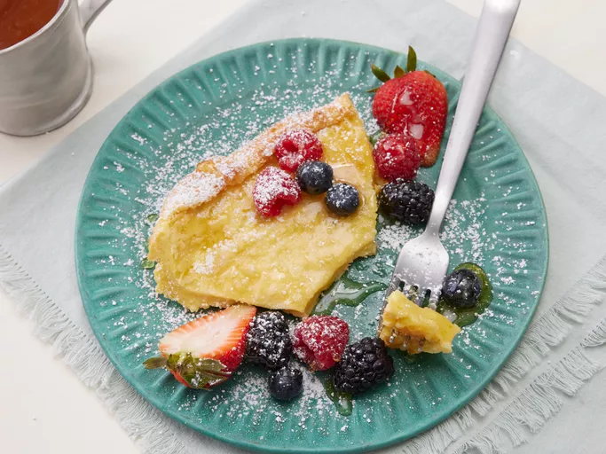

German Pancakes

How to make delicious German pancakes
German pancakes are a childhood favorite of mine. Golden pan-style egg dish, with lots of big bubbles while baking.
We eat these every Sunday morning. Serve with maple syrup.
This German pancake recipe is light, fluffy, and easy to make with ingredients you likely already have on hand.
Ingredients
- ¼ cup butter
- 1 cup all-purpose flour
- 1 cup milk
- 6 large eggs, lightly beaten
- ⅛ teaspoon salt
Directions
- Gather all ingredients.
- Preheat the oven to 350 degrees F (175 degrees C). Melt butter in a medium baking dish.
- Mix flour, milk, eggs, and salt in a medium bowl.
- Pour the mixture into the prepared baking dish.
- Bake on center rack in the preheated oven for 30 to 40 minutes, until golden brown.